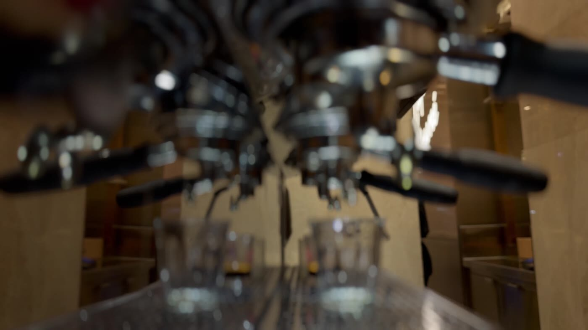
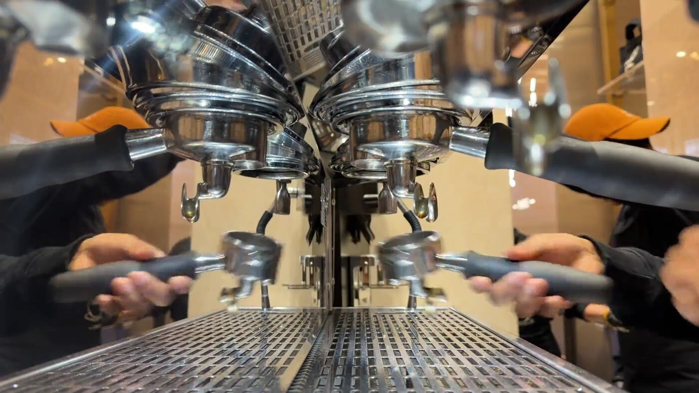
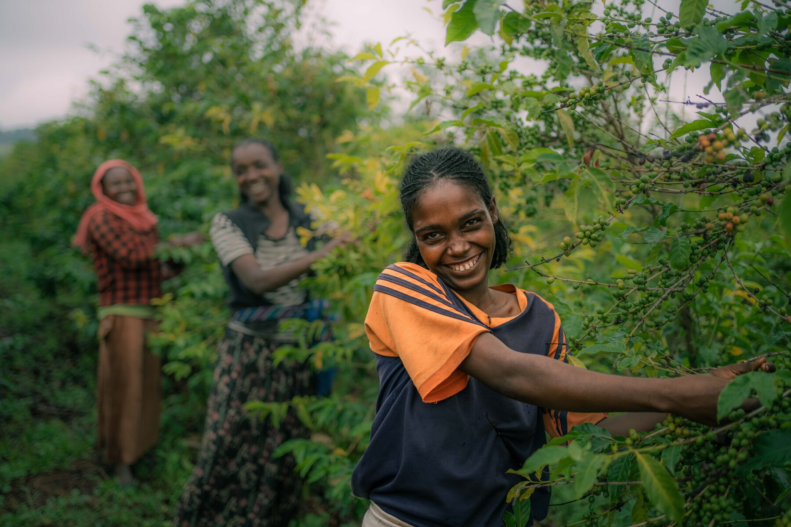
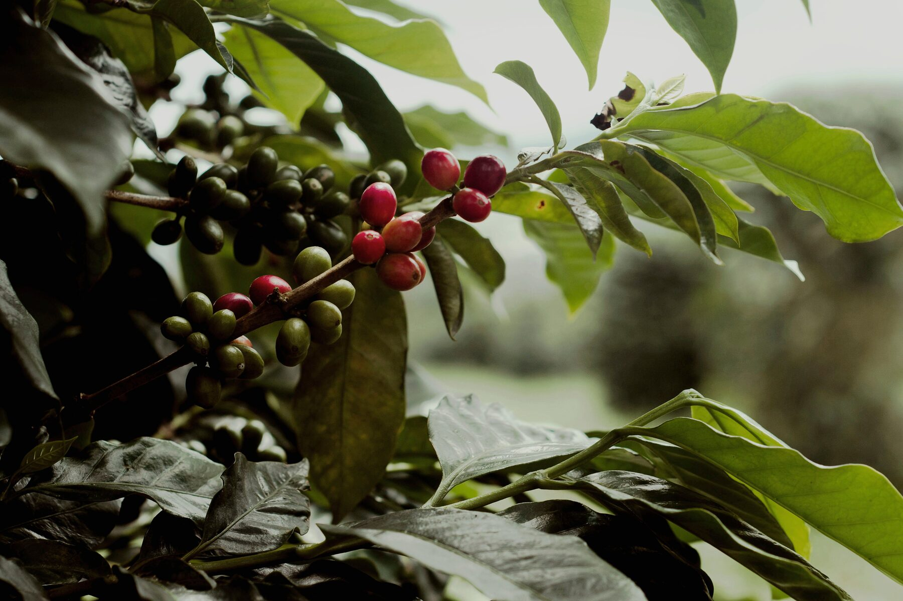
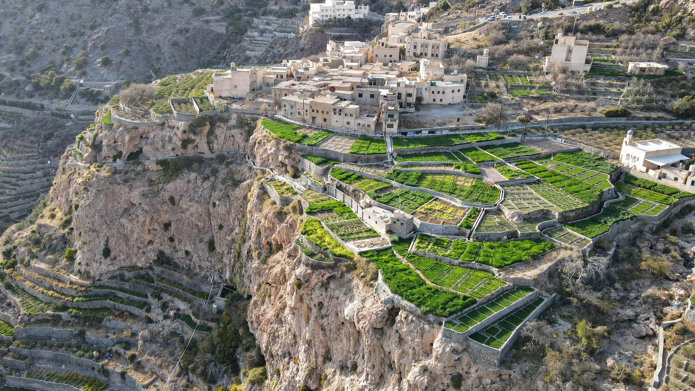

대표 영상 · 원작자·출처·이용허락 확인 필요
카페
이야기와 함께 앉아보세요.
서울에서 예멘 커피를 마시고, 배우고, 이야기 나눌 수 있는 공간 — 에스프레소와 핸드브루 모두 싱글 오리진 예멘 원두로만 내립니다.
대표 수확 영상입니다 — 디 진테제에서 촬영한 영상이 아닙니다.
카페가 존재하는 이유
머무를 이유, 네 가지.
바 위의 모든 것은 예멘으로 이어지고, 그에 관한 어떤 대화든 저희는 기꺼이 나눕니다.

대표 자료 · 원작자·원출처·이용허락 확인 후 게시
마시다
에스프레소와 핸드브루, 예멘 싱글 오리진만.

대표 자료 · 원작자·원출처·이용허락 확인 후 게시
배우다
원산지, 가공법, 추출법 — 무엇이든 팀에게 물어보세요.

대표 자료 · 원작자·원출처·이용허락 확인 후 게시
연결하다
단체 이용과 좌석 구성은 방문 전 매장에 문의해 주세요.

대표 자료 · 원작자·원출처·이용허락 확인 후 게시
발견하다
대화 한 번으로 만나는 예멘 커피 문화.

대표 자료 · 원작자·원출처·이용허락 확인 후 게시
위 사진들은 대표 이미지입니다 — 실제 카페 사진 촬영이 필요합니다.
방문 안내
영업시간 & 주소.
- 주소
- 서울특별시 용산구 이태원동 193-1 1층
193-1 Itaewon-dong, Yongsan-gu, Seoul - 영업시간
- 공식 소개 기준 월–금 09:00–18:00, 토·일 10:00–18:00.
변경·공휴일 운영은 방문 전 전화 또는 공식 소식으로 확인해 주세요.
회의실 & 큰 테이블
단체 인원과 좌석·회의실 이용 가능 여부를 방문 전에 문의해 주세요.
다른 손님들의 이야기도 읽어보세요.
자주 묻는 질문
단체로 방문할 수 있나요?
단체 인원·좌석·회의실 이용 가능 여부는 방문 전에 매장으로 문의해 주세요.
최신 영업시간은 어디서 확인하나요?
공식 소식 또는 전화로 확인해 주세요. 공휴일과 임시 변경 시간은 다를 수 있습니다.
자료 확인: 2026-10-17 · 공식 브랜드 소개 · 공식 이용안내. 최신 운영·가격·재고는 공식 채널에서 확인하세요.